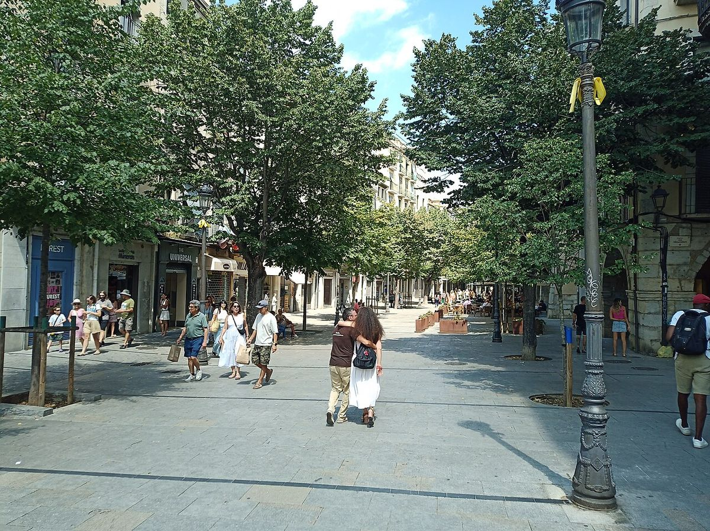

Bisagras · Elecciones: 23 de julio de 2023
Seis escaños por menos de 1.500 votos
6 escaños del 23J se decidieron por menos de 1.500 votos; en Girona bastaban 285
Por Nacho G. del Álamo ·
En 6 de las 52 circunscripciones, a la lista que se quedó sin el último escaño le faltaron menos de 1.500 votos para lograrlo. Los dos casos más ajustados fueron Girona, donde al PP le faltaron 285 votos para quitar el escaño a Junts, y Cantabria, donde le faltaron 404 para quitárselo a Vox.
Dato: verificable y reproducible
La pregunta: ¿En qué provincias el último escaño estuvo a punto de cambiar de manos?
Cómo se mide lo cerca que estuvo un escaño
DatoEn cada provincia, la ley D'Hondt divide los votos de cada candidatura entre 1, 2, 3… y entrega los escaños a los cocientes más altos. El último escaño va al último cociente que entra; el primero que se queda fuera es el de la lista aspirante. La diferencia entre los dos se puede traducir en votos: los que habría necesitado la aspirante, sin quitarle ninguno a nadie, para pasar por delante.
Seis provincias en el filo
DatoEl escaño más barato de 2023 estuvo en Girona. El sexto diputado de la provincia fue para Junts, y al PP le faltaron 285 votos para llevárselo. En Cantabria, el quinto fue para Vox; al PP le faltaron 404.
DatoEn Tarragona, el último escaño fue para Junts y a el PSOE le faltaron 1.248 votos; En Madrid, el último escaño fue para PP y a el PSOE le faltaron 1.340 votos; En Albacete, el último escaño fue para PSOE y a Vox le faltaron 1.412 votos; En Salamanca, el último escaño fue para PP y a el PSOE le faltaron 1.495 votos.
DatoLos márgenes van en las dos direcciones. En Girona y Cantabria el PP fue el que se quedó a las puertas; en Madrid y Salamanca, fue el PSOE el que se quedó a menos de 1.500 votos del PP.
Lo que habría cambiado
Dato2 de los 7 diputados de Junts salieron de estos márgenes: el de Girona y el de Tarragona. Con 285 votos más para el PP en Girona, Junts habría tenido 6 escaños.
DatoEl de Cantabria muestra que no todos los vuelcos cambian los bloques. Si el PP le hubiera quitado ese escaño a Vox, PP y Vox habrían seguido sumando 170.
DatoJusto por encima de los 1.500 votos quedaron Santa Cruz de Tenerife (1.565), Ceuta (1.587), Teruel, donde a Teruel Existe le faltaron 1.946, y Málaga (2.429).
Sobre el terreno
DatoLa ciudad de Girona ha ganado más de 30.000 vecinos en lo que va de siglo: tenía 75.256 habitantes en 2001 y unos 109.000 en 2025. Fuentes: 1, 2
Lo que no sabemos
- HipótesisSi estos márgenes se repetirán el 29N. Un margen pequeño en 2023 no significa que la provincia vaya a ser decisiva en 2026.
Dato: verificable y reproducible. Patrón: relación descriptiva, sin causa. Hipótesis: explicación posible que aún no tiene dos fuentes independientes.
Los datos
| Provincia | Escaños | Último escaño | Aspirante | Votos que le faltaban |
|---|---|---|---|---|
| Girona | 6 | Junts | PP | 285 |
| Cantabria | 5 | Vox | PP | 404 |
| Tarragona | 6 | Junts | PSOE | 1.248 |
| Madrid | 37 | PP | PSOE | 1.340 |
| Albacete | 4 | PSOE | Vox | 1.412 |
| Salamanca | 4 | PP | PSOE | 1.495 |
| Santa Cruz de Tenerife | 7 | PSOE | Sumar | 1.565 |
| Ceuta | 1 | PP | PSOE | 1.587 |
| Teruel | 3 | PP | Teruel Existe | 1.946 |
| Málaga | 11 | PP | PSOE | 2.429 |
Método y fuentes
- Qué se compara
- Las 52 circunscripciones del Congreso en 2023: el último escaño asignado y la lista que más cerca estuvo de lograrlo.
- Límites
- Calculado con los votos por mesa de Interior, incluido el CERA; el reparto completo reproduce los 350 escaños oficiales. Los votos que faltaban suponen que la lista suma votos sin que nadie los pierda.
- Metodología completa
- Cómo se calculan los porcentajes, el modelo, los gemelos y los escaños
- Fuentes
- Autoría
- Nacho G. del Álamo
- Revisión de datos y texto
- Nacho G. del Álamo, 6 de octubre de 2026
- Publicado · actualizado
- 6 de octubre de 2026 · 7 de octubre de 2026
- Correcciones
- Ninguna. Historial del Atlas